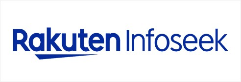
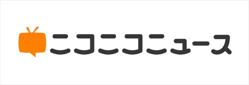
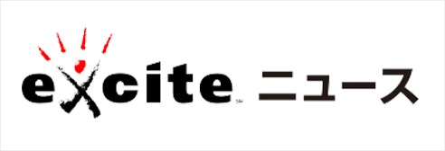
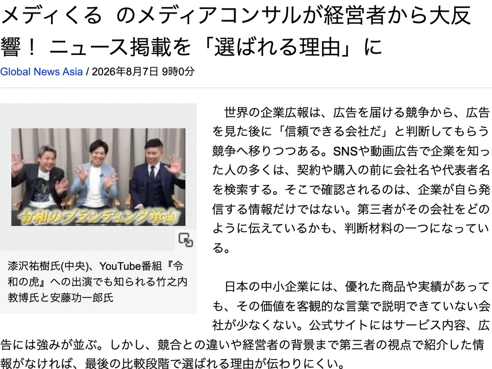
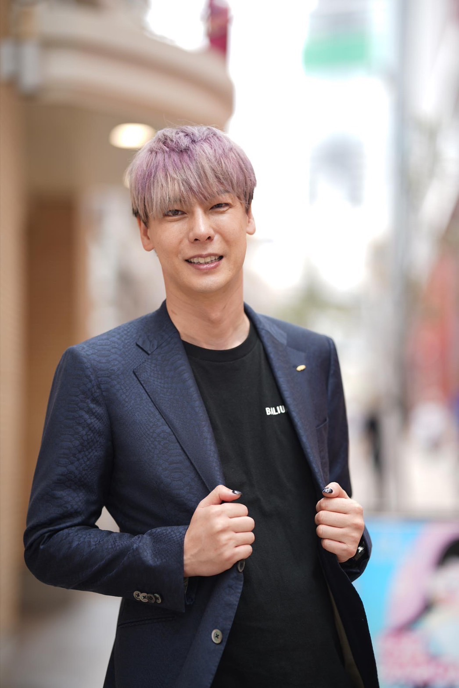
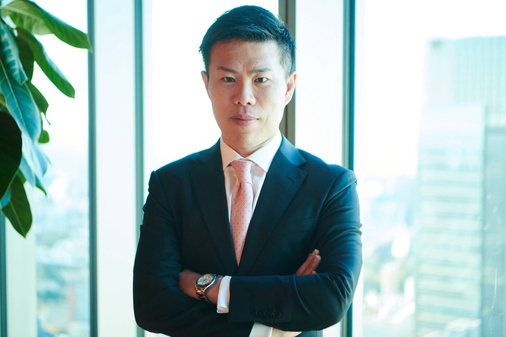

プレスリリース
発表原稿を用意
企業のニュースを自社の言葉でまとめる
メディアへ配信
原稿を届け、掲載・取材のきっかけに
原文の転載提携媒体に掲載される場合も
取材・記事化実施・掲載は媒体が判断
プレスリリースやPRサービスではできない！
大手ネットニュース×複数メディア
SEOだけではなく、AIがあなたの会社を24時間365日おすすめしてくれる最強の集客ツールに！
LINEでサービスの詳細を見る今なら、初期費用0円で始められる！取材記事の掲載先の一例



取材記事を複数メディアへ掲載する標準プラン。対象媒体は契約前にご案内します。
図でわかる、サービスの違い
発信のしかたから、掲載後の活用まで。順番に見てみましょう。
01 / PROCESS
企業のニュースを自社の言葉でまとめる
原稿を届け、掲載・取材のきっかけに
事業への想いや強み・背景を聞く
会社の強み・背景を第三者の視点で伝える
第三者の記者が取材・記事を制作し、合意した複数メディアへ掲載します。掲載後もAI検索での引用を計測・改善します。AIによる引用・推奨や個別の成果を保証するものではありません。
02 / CONTENT
架空の会社・サービスによる見出し例
顧客の課題に向き合う、
○○社の想いと取り組み。
サービスの情報に加えて、会社の姿勢や強みも伝える。
伝え方を示す一例です。プレスリリースでも背景や想いを発信できます。記事の構成・見出しは取材内容により異なります。
03 / USE
商談で会社の背景や強みを伝える材料に。
仕事への想いや会社の姿勢を伝える。
記事へのリンクで掲載実績を紹介。
合意した指名検索で引用状況を確認・改善。
記事の転載・二次利用は、各媒体の利用条件に沿って行います。取材からAI検索の診断・改善まで、同じプランで継続します。実際のAI引用や問い合わせ・採用などの成果は保証しません。
| 比較項目 | プレスリリース 配信 | メディくる |
|---|---|---|
| 原稿 | 企業の発表 | 第三者の取材記事 |
| 取材 | 媒体が判断 | サービスに含む |
| 掲載 | 配信・転載と 独自記事は別 | 合意した 複数メディアへ掲載 取材から掲載まで |
取材記事を、御社の強みを伝える材料に。
一般的なプレスリリース配信との工程の比較です。提供内容はサービス・プランにより異なります。
サービス・料金の条件を見る取材で伝えた御社の強みを、AIで調べる人にも。
AI検索は、Web上の情報を参照して回答する場合があります。自社サイトの正確な情報を土台に、取材記事で企業の背景・取り組み・実績の根拠を伝えます。
事業内容・実績・会社情報を、正確にわかりやすく。
独自の取材から、強みや取り組みの根拠を外部に公開。
何と紹介され、何が引用されたかを確認・改善。
大切なのは、取材内容・根拠・掲載元がわかること。
ニュース掲載と、AI回答の確認・改善を組み合わせます。
掲載と実際のAI引用は別に確認します。掲載だけで引用・推薦が決まるものではありません。以下は検索の仕組みと情報の品質に関する資料で、当サービスの成果を示すものではありません。
仕組みの参考：OpenAI：検索と出典 ／ Google：検索のAI機能 ／ Google：有用で信頼できる情報
大手ネットニュースの取材記事に加え、「みんなの評判.com」「社長の取材.com」へ。会社の実績と経営者の想いを、複数の第三者メディアで伝えます。
ニュース掲載先の例：Global News Asia、楽天Infoseek、ニコニコニュース、エキサイトニュース。実際の掲載先・転載先は事前にご案内します。
ONE SERVICE
プロによる正式な取材記事 × 複数の第三者メディア × AI検索。取材から掲載、ブランディングスコアの診断、AI引用の確認・改善まで、一つのサービスでご提供します。
御社ならではの強みを、
取材記事で伝えます。
掲載記事を、営業・Web・
AI検索にも活用します。
会社名や評判を調べる方に、
第三者記事で判断材料を届けます。
大手ネットニュースへの取材記事掲載に加え、「みんなの評判.com」「社長の取材.com」など、会社公式サイト以外の複数メディアへ展開します。掲載先・掲載内容・制作スケジュールは導入前にご案内します。
発信だけで終わらない。
調べられた先に、信用を。
記事を掲載して終わりではありません。現在のブランディングスコアを診断し、引用率50％の達成・維持に向けて毎月改善します。
見えなかった信用を、
スコアと改善で育てる。
会社名・代表者名・サービス名に「口コミ」「評判」「実績」を組み合わせた指名検索を対象とします。対象AI・質問・測定回数・対象URLを事前に合意し、有効回答のうち対象URLを明示的な出典として引用した回答の割合を月次で集計します。同じ回答内の複数リンクは1件として数えます。
御社の背景・強みを深掘りする、第三者による正式な取材記事。
大手ネットニュースへの取材記事掲載と、複数メディアへの展開。
会社の外にある信用の根拠を、AIが参照できる情報へ。
診断・改善を重ね、AI検索で選ばれる集客導線を育てます。

会社の想い・強み・実績を取材。
大手ネットニュースに掲載。
会社の強み・取り組みを、
取材記事や企業情報から伝える。
情報を整え、引用状況を確認。
改善と毎月のレポートを継続。
会社名・社長名・サービス名と、
「口コミ・評判・実績」を組み合わせたAI検索に。
申し込む前に、
信頼できる会社か確かめたい。
「取材記事や企業ページで、
会社の強みを確認できます。」
取材記事の直接引用、または
企業ページの引用を確認。
企業ページに公式URLがある場合は、
商品・サービスへ案内できます。
広告で知る。検索やAIで確かめる。信用で選ぶ。
調べられた後にも、御社を選ぶ理由を。
いまのスコアを診断し、改善の優先順位をレポートで示します。
架空の会社・AI回答・ページを用いた説明図です。複数メディアの実際の掲載内容・対象URLは事前にご案内します。掲載と実際のAI引用は別に確認し、紹介内容を継続的に改善します。
2つのブランディングを、ひとつにつなぐ。
検討される、その瞬間に。
取材記事で会社の魅力を伝え、問い合わせにつなげます。
メディくるは、記事づくりから引用改善まで。
会社の魅力を引き出す取材から、AI検索での引用改善まで、一貫して実行します。
※会社名・代表者名（社長名）・サービス名と評判・口コミ・実績を組み合わせた指名検索を想定。AIはWeb上の情報を参照して回答する場合があります。掲載だけで自動的に引用・推薦されるものではなく、回答や引用先は質問・利用環境・AI側の判断により変わります。24時間365日は、お客様が検索する時間を問わず記事を活かす考え方で、毎回の推薦を保証するものではありません。
仕組みの参考：Google 検索のAI機能 ／ ChatGPT検索の出典表示。特定サービスの成果を裏付ける資料ではありません。
RESEARCH & OUTLOOK
評判を重視する人に、会社の魅力を伝える。
その準備を、AIを使う場面にも広げていきます。
REPUTATION MATTERS
比較・検討する人に、会社を理解できる情報を用意することが大切です。
消費者庁・2023年11月調査／ネット利用者4,439人。「口コミを調べる人の割合」ではありません。出典 ↗
AI ADOPTION
グランネット調査：全国20代以上の就業者、各500人。公表人数101人・187人を全回答者で再集計。検索全体のAIシェアではありません。出典 ↗
FIVE-YEAR SCENARIO
直近の平均増加幅の半分が続くと仮定
購入比較でAIを使った経験率。同じ調査対象が、このペースで増えると仮定した計算です。
| 時点 | 半分の増加幅 | 4分の1の増加幅 |
|---|---|---|
| 2027年8月 | 47.7% | 42.6% |
| 2028年8月 | 58.0% | 47.7% |
| 2029年8月 | 68.4% | 52.9% |
| 2030年8月 | 78.7% | 58.0% |
| 2031年8月 | 89.0% | 63.2% |
調査会社の予測や、日本全体の検索に占めるAIの割合ではありません。実測はグランネット調査（各500人）の購入比較利用経験人数を全回答者で再集計。2026年8月37.4%に、月平均増加幅1.72ポイント × 経過月数 × 仮定倍率を加算。将来値の実現や成果を保証するものではありません。調査出典 ↗
公表値と条件付き試算を区別しています。他社サービスの料金・内容は2026年9月25日確認。メディくるの提供条件は2026年9月30日更新。
PRESS RELEASE / BRANDING
広告で知ったお客様は、会社名や評判を調べます。その比較の場に、取材記事という信用の材料を届けます。
| 比較項目 | 一般的なプレスリリース配信 | メディくる |
|---|---|---|
| 起点 | 企業の発表原稿 | プロによる正式な取材記事 |
| 掲載まで | 配信後の取材・編集記事化は媒体判断 | 取材・記事制作・大手ネットニュース掲載まで |
| 信用の広がり | 配信・転載を通じた情報発信 | 複数の第三者メディアに展開 |
| 掲載後 | 広報・告知への活用 | 広告・営業・採用への活用とAI引用の改善 |
| 改善の見え方 | 配信・閲覧などを確認 | ブランディングスコアと月次レポート |
一般的な配信サービスとの工程・提供範囲の比較です。PRサービス全般の内容は各社・各プランで異なります。
AI SEARCH / CONTINUOUS IMPROVEMENT
引用率を測るだけで終わらず、引用される情報そのものを整えます。
ブランディングスコアと、AIの紹介内容・引用元を確認。
取材記事・実績・会社情報を、複数メディアで伝える。
引用率50％の達成・維持に向けて改善を続ける。
変化と次の打ち手を共有し、集客導線を育てる。
会社名・代表者名・サービス名に「口コミ」「評判」「実績」を組み合わせた指名検索を対象とします。対象AI・質問・測定回数・対象URLを事前に合意し、有効回答のうち対象URLを明示的な出典として引用した回答の割合を月次で集計します。同じ回答内の複数リンクは1件として数えます。
1年契約・自動更新の固定料金です。AI引用率が50％未満の月も料金は変わらず、50％の達成・維持に向けて診断・改善を続けます。
ONE SERVICE / SIMPLE PRICING
ニュース掲載も、複数メディアへの展開も、毎月の診断・改善も。
税込55,000円／月
1年契約・自動更新
初年度の年間総額66万円（税込）
税込15,000円／月
AI検索で選ばれるための
診断・改善・レポートを継続
初年度の一括払いも選べます。2か月分無料の55万円（税込）。
プランに含まれるものプロによる取材・記事制作 ／ 大手ネットニュース掲載 ／ 複数の第三者メディア掲載 ／ ブランディング診断 ／ AI引用の計測・改善 ／ 月次レポート
1年契約・自動更新の固定料金です。AI引用率が50％未満の月も料金は変わらず、50％の達成・維持に向けて診断・改善を続けます。
会社名・代表者名・サービス名に「口コミ」「評判」「実績」を組み合わせた指名検索を対象とします。対象AI・質問・測定回数・対象URLを事前に合意し、有効回答のうち対象URLを明示的な出典として引用した回答の割合を月次で集計します。同じ回答内の複数リンクは1件として数えます。
AIによる毎回の推薦や、問い合わせ・採用・売上の増加を保証するものではありません。初期費用0円キャンペーンは予告なく終了する場合があります。対象となる掲載媒体・契約開始日・更新手続きは契約前にご案内します。
OPTION / LANDING PAGE
取材記事とニュース掲載実績を活用し、会社の魅力とサービス内容を伝える専用LPを制作します。掲載記事の強みを伝え、相談・お問い合わせにつなげます。
企業ブランディングとは別料金
任意の追加オプションです。企業ブランディングの月額料金には含まれません。制作内容・お支払い条件は導入前にご案内します。
プロの記者が、会社の想い・実績・社会的な価値を引き出します。
大手ネットニュースと、会社公式サイト以外のメディアに展開します。
AIの紹介内容・引用元・改善するべき情報をレポートにします。
引用率50％の達成・維持を目指し、検索からの集客導線を育てます。
OUR TEAM
企業のリブランディングと価値発信に取り組む。会社の想いや強みを、伝わる記事へつなげます。

りらくる創業者。事業を育てた経験とマーケティングの視点から、企業の魅力の発信を支えます。

実業家・投資家。収益構造や継続性を重視する経営の視点から、企業の価値づくりを支えます。
FAQ
一般的なプレスリリース配信は、企業発表をメディアへ届けることが中心です。メディくるは、プロによる取材・記事制作、大手ネットニュース掲載、複数の第三者メディア展開、AI引用の診断・改善までを一つのサービスにしています。PRサービス全般の内容は各社・各プランで異なります。
プロによる正式な取材記事 × 複数の第三者メディア × AI検索。取材から掲載、ブランディングスコアの診断、AI引用の確認・改善まで、一つのサービスでご提供します。
500社以上の取材実績と、上場会社4社の役員経験。事業の価値を知るプロが、御社の強みを取材記事に。代表取締役の漆沢祐樹が、会社の実績だけでなく、事業の背景や社会的な価値を引き出します。
大手ネットニュースへの取材記事掲載に加え、「みんなの評判.com」「社長の取材.com」など、会社公式サイト以外の複数メディアへ展開します。掲載先・掲載内容・制作スケジュールは導入前にご案内します。
プロによる取材をもとに、各メディアに合わせて記事を制作・展開します。掲載数と、取材の実施回数は同じ意味ではありません。具体的な掲載先と記事構成は導入前にご案内します。
複数メディアへの展開先としてご案内します。これらは会社公式サイトとは別のメディアです。取材内容・公開情報・確認できる実績をもとに掲載し、存在しない口コミや第三者の評価を作るサービスではありません。運営者・編集責任者と、掲載内容・対象サイトを導入前にご案内します。
初年度は月額55,000円（税込）。初年度一括払いなら2か月分が無料で、年間660,000円のところ550,000円（税込）。2年目以降は月額15,000円（税込）です。取材・掲載とAI検索を別々に追加契約する料金体系ではありません。
通常11万円（税込）の初期費用が、現在のキャンペーン中は0円になるという意味です。サービス利用料は別途必要です。初年度は月額55,000円（税込）。初年度一括払いなら2か月分が無料で、年間660,000円のところ550,000円（税込）。2年目以降は月額15,000円（税込）です。キャンペーンは予告なく終了する場合があります。
初年度の月額55,000円×12か月＝660,000円（税込）に対し、一括払いは550,000円（税込）。2か月分にあたる110,000円（税込）が無料になります。
2年目以降は月額15,000円（税込）です。AI引用の状況を計測し、診断レポートと改善提案・継続的な情報整備をご提供します。
1年契約・自動更新です。契約開始日・更新日・解約手続きとお支払い方法は契約前にご案内します。
1年契約・自動更新の固定料金です。AI引用率が50％未満の月も料金は変わらず、50％の達成・維持に向けて診断・改善を続けます。
専用LP制作は任意の追加オプションで、基本料金33万円（税込）です。今回の企業ブランディングの月額料金には含まれません。制作範囲は事前にご案内します。
はい。取材・企画構成・記事制作を行ったうえで、掲載前に内容をご確認いただきます。確認した事実をもとに、会社の強みや想いを記事にします。
掲載URLを会社HP・営業資料・採用ページ・SNSなどで紹介できます。広告で知ったお客様が会社を調べたときの、信用を確かめる材料として活用します。記事本文・写真・媒体ロゴの二次利用は各媒体の条件に従います。
会社名・代表者名・サービス名に「口コミ」「評判」「実績」を組み合わせた指名検索を対象とします。対象AI・質問・測定回数・対象URLを事前に合意し、有効回答のうち対象URLを明示的な出典として引用した回答の割合を月次で集計します。同じ回答内の複数リンクは1件として数えます。すべてのAI検索の50％で表示される、または一人ひとりの検索で50％の確率で推薦されるという意味ではありません。
AIの回答は質問・利用環境・AI側の判断により変わります。毎回の推薦は保証しません。メディくるは、引用率50％の達成・維持に向けて、信頼できる取材記事や会社情報を整え、実際の回答を確認しながら改善を続けます。
現在のブランディングスコア、AIが会社をどう紹介しているか、どの記事が引用されているか、どの情報を改善するべきかを確認できます。毎月の変化と次の改善を、見える形でご報告します。
LINE登録後、3つの質問にご回答いただくと資料をご覧いただけます。具体的な活用方法・料金・掲載内容は、その後の個別案内で確認できます。
YOUR NEXT STORY
取材記事をつくるところから、AI検索で伝わる情報づくりまで。
LINE・フォームから、御社の掲載条件をご確認いただけます。